Burnham Highlights
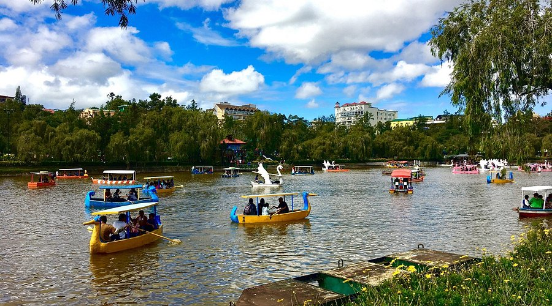
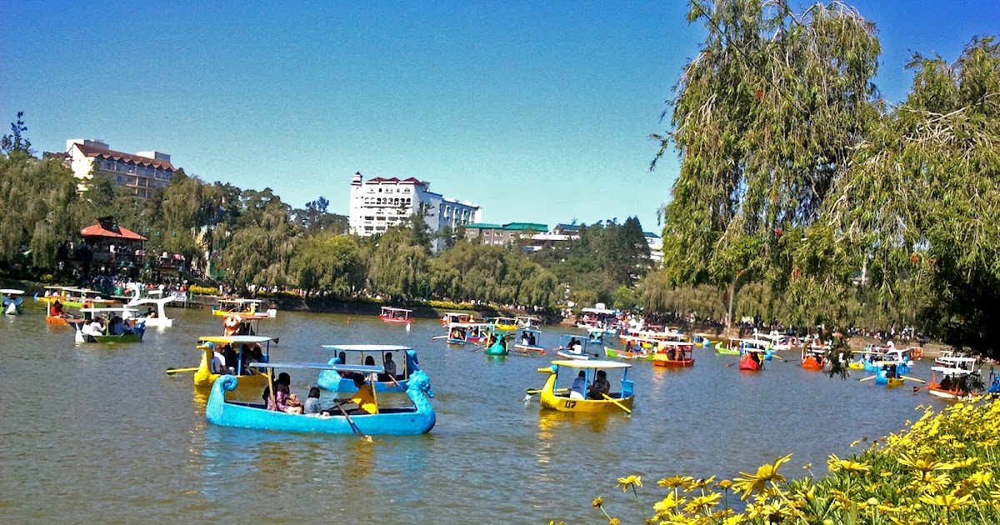
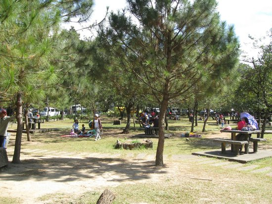
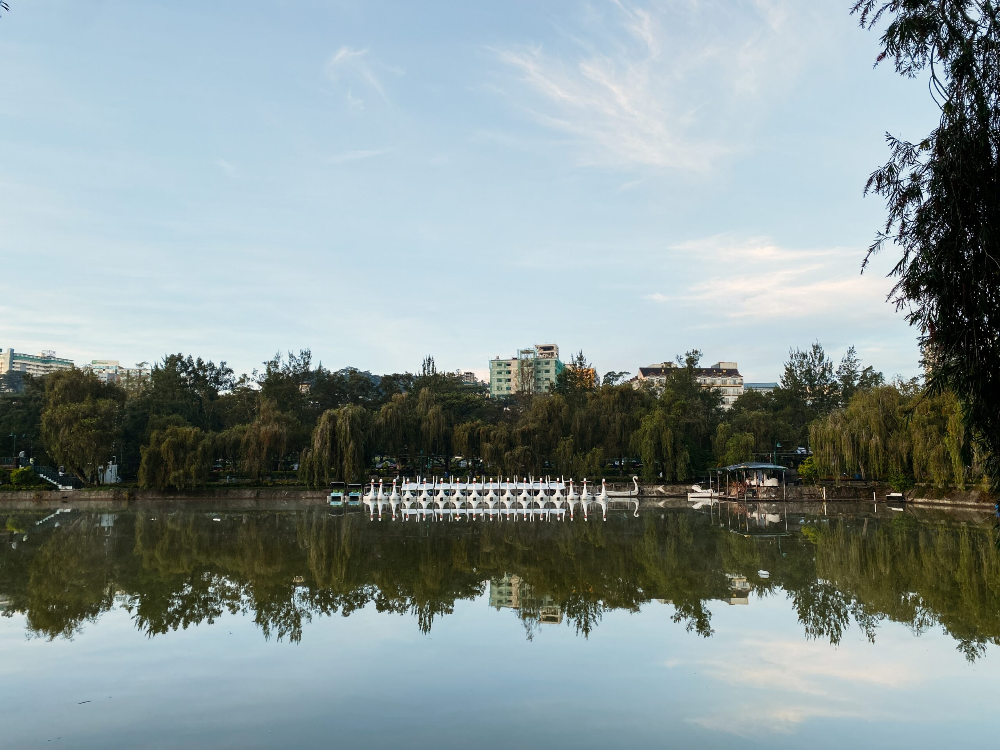

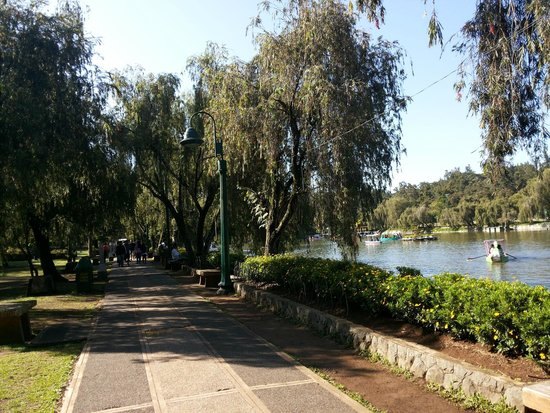
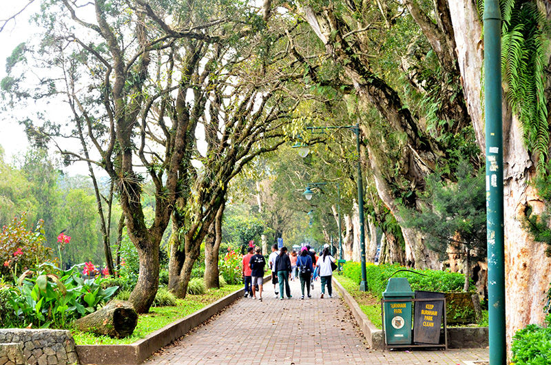
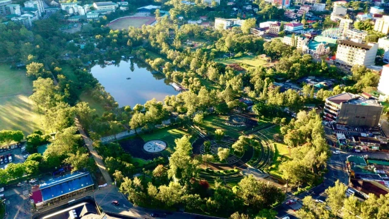
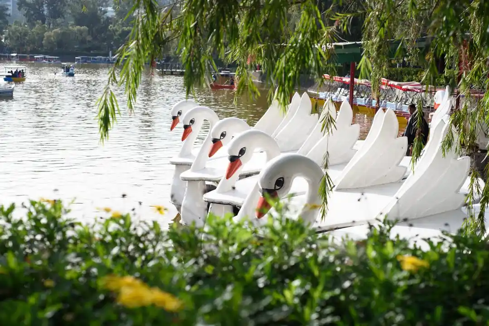
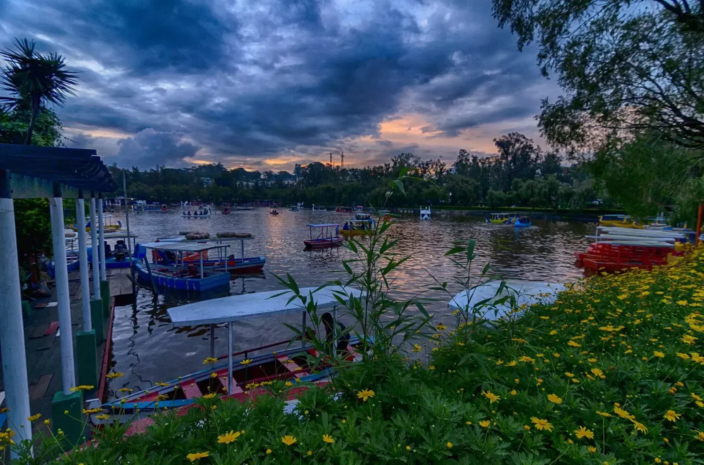
Activities Your Must Try
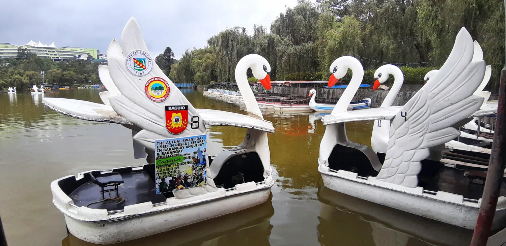
Boating sa Burnham Lagoon
Rent a rowboat or swan boat and paddle across the scenic man-made lagoon at the heart of the park. It's a relaxing way to enjoy the cool Baguio breeze and picturesque surroundings.
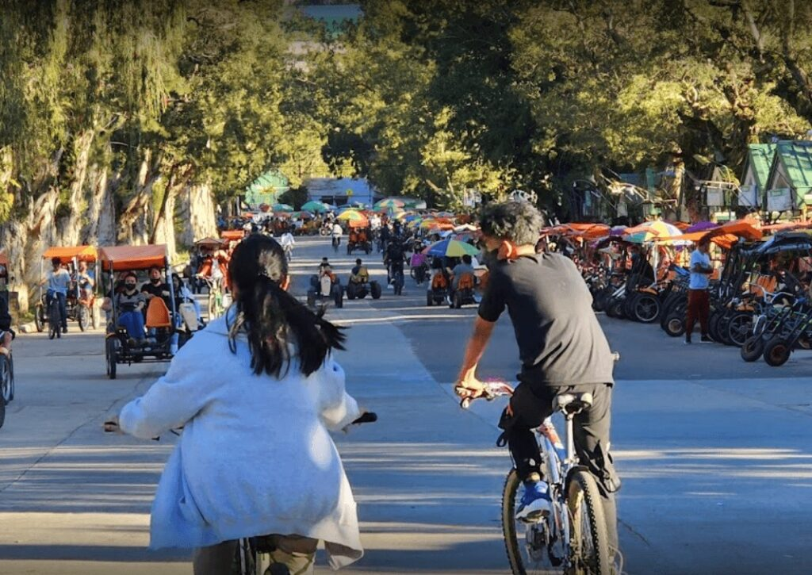
Biking Around the Park
Explore the park by renting a bicycle or go-kart. Whether you're with family or friends, it's a fun and active way to see the park's beauty.
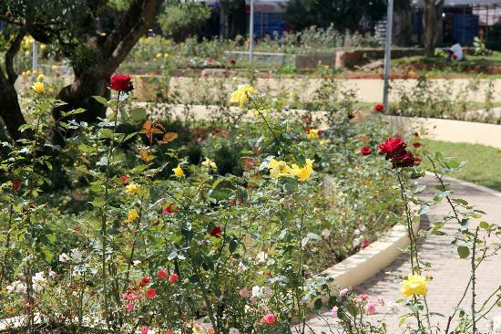
Strolling Through the Rose Garden
Take a leisurely walk through the Rose Garden, adorned with vibrant blooms and offering a peaceful atmosphere. It's a perfect spot for relaxation and photography.

Visiting the Children's Playground
Let the kids enjoy the playground equipped with slides, swings, and other fun structures. It's a safe and enjoyable area for children to play and make new friends